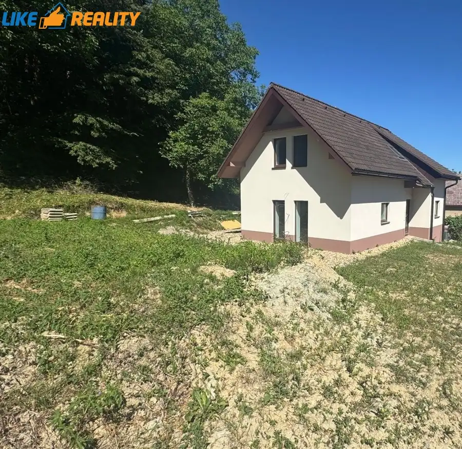
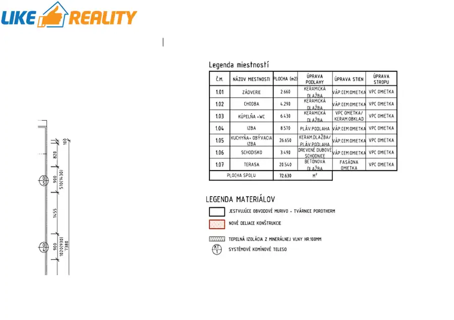
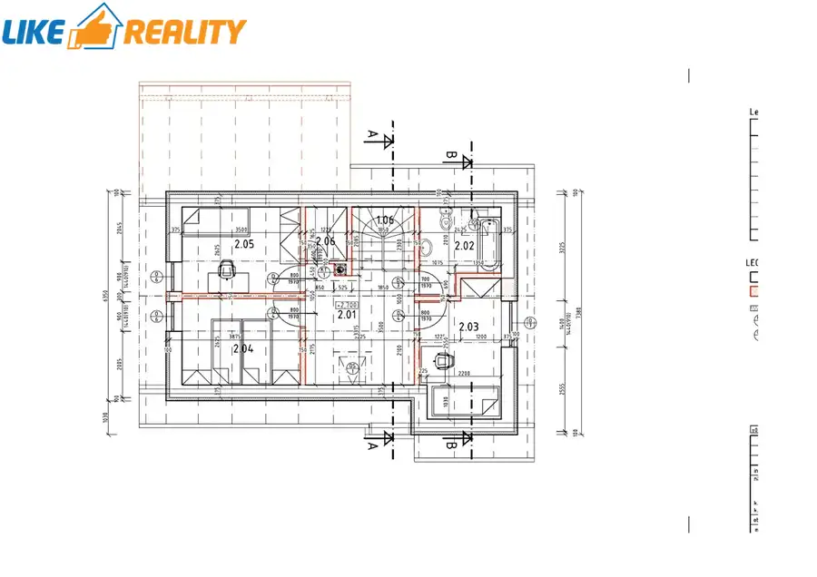
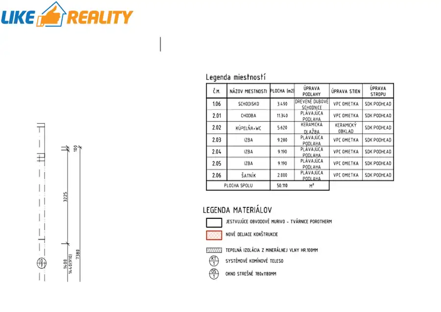
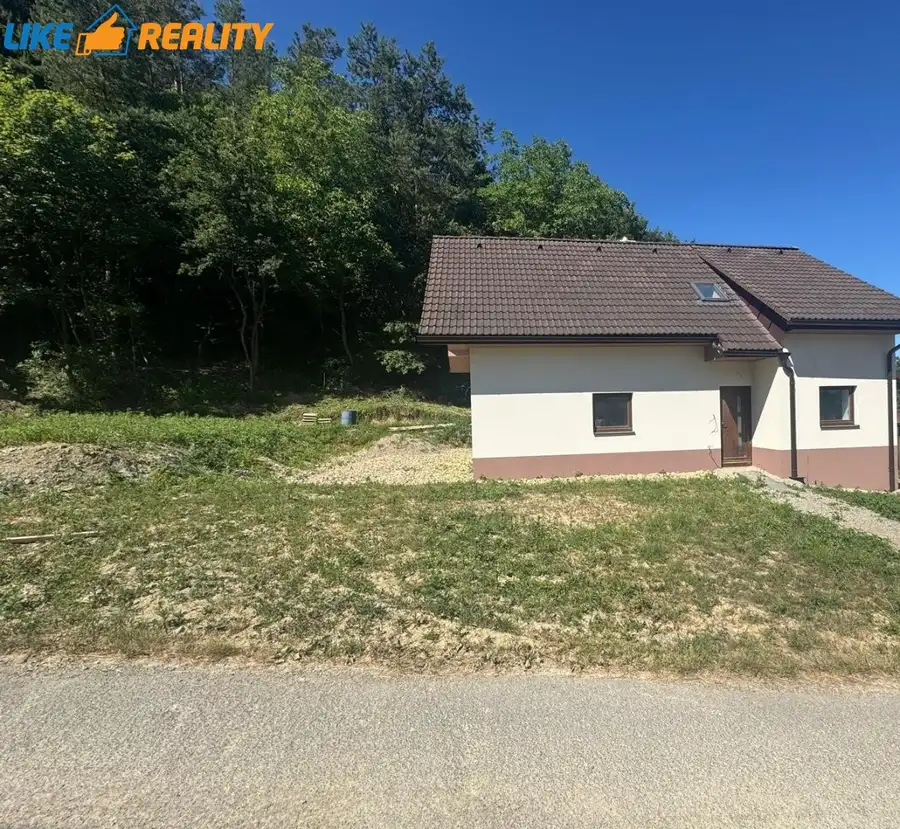
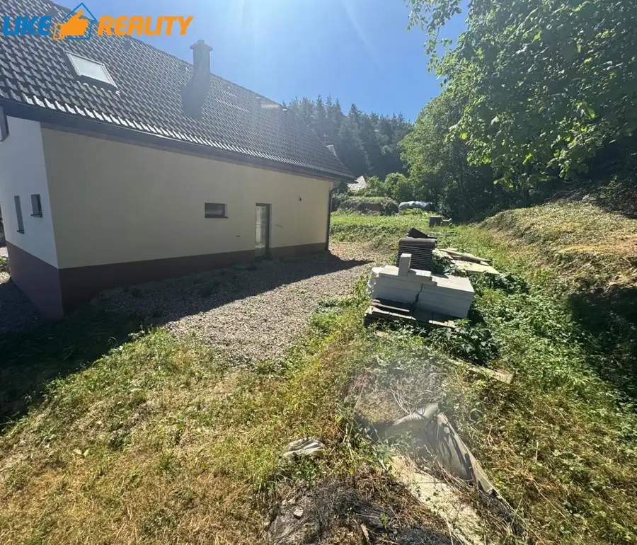
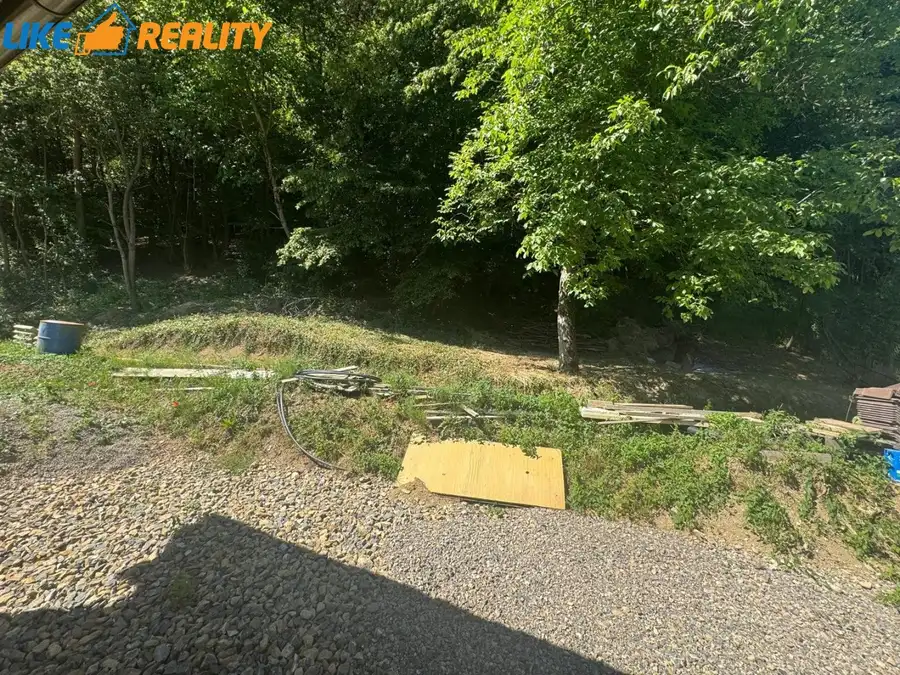
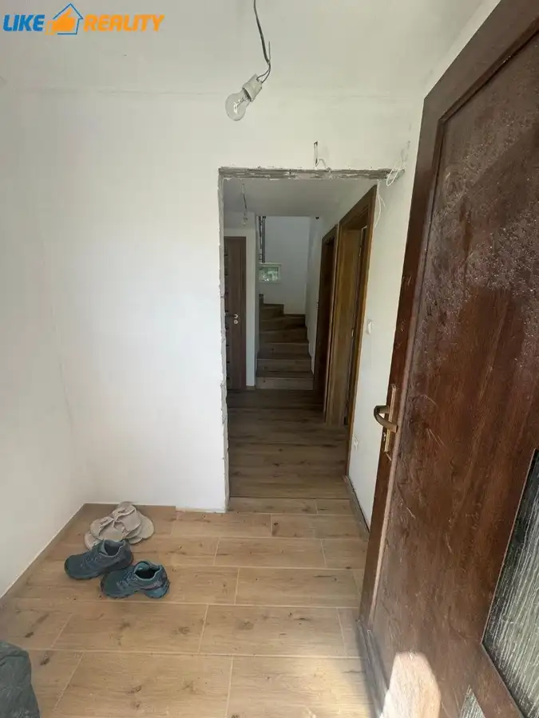
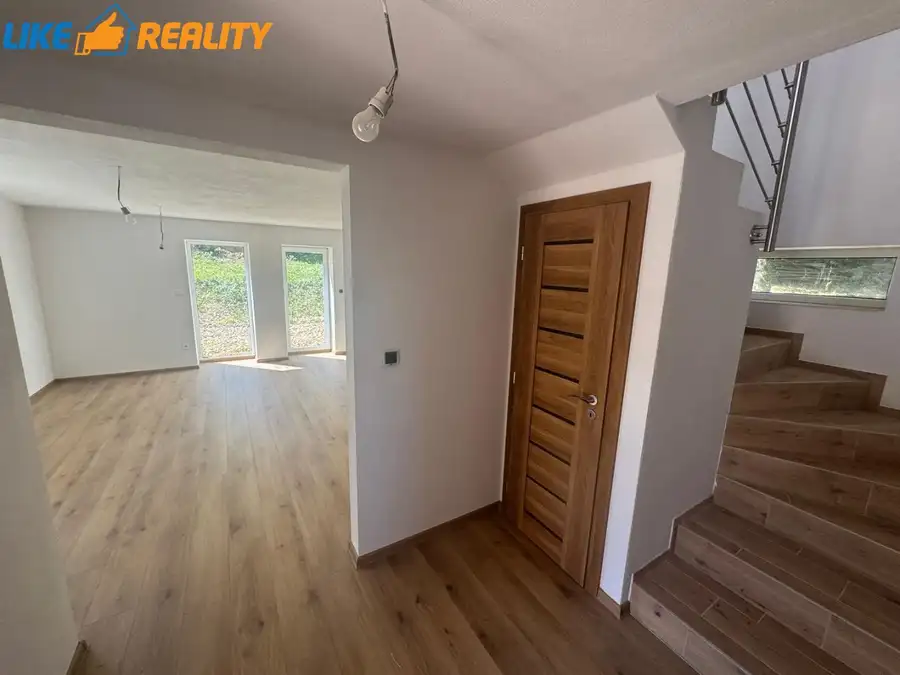

Exkluzívne:predaj rodinného domu v obci Beluša-mestská časť podhorie (okres púchov)
Beluša










- Plocha122.74 m²
- StavKompletná rekonštrukcia
- VlastníctvoOsobné
O nehnuteľnosti
Vo výhradnom zastúpení Vám ponúkame na predaj kompletne zrekonštruovaný rodinný dom,ktorý bol v pôvodnom stave (hrubá stavba).Nachádza sa v obci BELUŠA-mestská časť PODHORIE.Dom je SKOLAUDOVANÝ, dvojpodlažný bez podpivničenia (1.Nadzemné podlažie,Podkrovie). DISPOZIČNÉ RIEŠENIE DOMU:1.NP (Nadzemné podlažie) – zádverie,vstupná chodba,kuchyňa s obývacou izbou,izba,kúpeľňa s WC,miestnosť-odkladací priestor pod schodami,schodisko,terasa2.Podkrovie- chodba so schodiskom, 3- izby,kúpeľňa1NP:Kuchyňa - (bez kuchynskej linky-predpríprava)Bez kotla - (predpríprava)Kúpeľňa:Sprchový kút bez presklenia spolu s WCUŽITKOVÁ PLOCHA DOMU1.NP (Nadzemné podlažie): 72,63 m2Podkrovie: 50,11 m2SPOLU: 122,74m2VEĽKOSŤ POZEMKU: 600m2 INŽINIERSKÉ SIETE:Elektrika,voda,kanalizácia-(žumpa na pozemku), Plyn-možnosť napojenia-ide popred dom.Plynová prípojka nie je spravená. Vyhrievanie-podlahové,elektrické rohože (heat-flow)Význam a funkcia (heat-flow):Ide o plošné elektrické podlahové vykurovanie.Rohož tvorí sieťka (sklotextilná mriežka), do ktorej je integrovaný vykurovací kábel.Po zapojení do termostatu sa rohož nahrieva a rovnomerne odovzdáva teplo do podlahy.Hlavné stavebné konštrukcie, technický popis vyhotovenia:Základy rodinného domu sú pásové z prostého betónu C 25/30 skl. hr. 600 a 400 mm. V nadzemnej časti použité debniace tvárnice PREMAC DT 400. Izolácia proti spodnej vode a zemnej vlhkosti 1 x Np, 1 x GLASBIT, alt. Basf Masterseal 537 a 6100 FX, 2 x náter. Podkladné betóny B 25/30 skl. hr. 120 mm. Zvislé nosné konštrukcie sú vymurované z tehlového muriva POROTHERM PROFI 44 P+D skl. hr. 440 mm. Tepelný odpor obvodového plášťa vyhovujúci súčasným teplotechnickým normám. Nosné priečky sú murované z tehlového muriva POROTHERM 25 P+D skl. hr. 250 mm. Deliace priečky z tehlového muriva POROTHERM 17,5 P+D, 11,5 P+D, 8 P+D skl. hr. 175, 115 a 80 mm. Vodorovné nosné konštrukcie tvori obvodové vence a preklady z betónu C 25/30. Strop nad I. nadzemným podlažím je zrealizovaný ako železobetónový monolitický s rovným podhľadom (výška 2,295 m), nad I. podkrovným podlažím je zrealizovaný ako drevený, sadrokartónový s rovným podhľadom, zavesený na klieštinách. Obvodové vence sú izolované tepelnou izoláciou STYRODUR skl. hr. 60 mm. Zastrešenie rodinného domu je riešené dreveným krovom, strecha sedlová. Krytina škridla BRAMAC. Klampiarske konštrukcie z lakovaného plechu a to okapové žľaby a zvody vrátane doplnkov. Vonkajšie omietky sú realizované ako ušľachtilé silikónové, BAUMIT THERMOEXTR, zateplenie systém BAUMIT skl. hr. 100 mm. Sokel je upravený marmolitovou omietkou. Výplne otvorov, okná sú navrhnuté plastové s izolačným dvojsklom U 1,1 W/m2K a vnútorné okenné žalúzie. Vonkajšie dvere sú riešené rovnako. Vnútorné dvere drevené do drevenej obložkovej zárubne. Steny z vnútornej strany sú upravené omietkami vápennými, hladkými, jemný štuk. V kúpeľni a sanitárnych priestoroch je navrhnutá cementová omietka a obložená keramickým obkladom do výšky miestností, v kuchyni do výšky min. 1400 mm. Podlahy sú navrhované ako plávajúce laminátové a keramické dlažby. Tepelne izolované sú základy a podlaha polystyrénom alt. ISOVER a STYRODUR. Stropná konštrukcia je izolovaná izoláciou ISOVER UNIROL PLUS skl. hr. 100 +200 + 100 mm. Vykurovanie rodinného domu je navrhnuté podlahovými elektrickými rohožami. Príprava TÚV v el. zásobníku. V kuchyni sa bude kuchynská linka dl. 6,50 m s nerezovým drezom, indukčný varný panel, umývačka riadu, s elektrickou teplovzdušnou rúrou a digestorom na odťah kuchynských výparov. Zriaďovacie predmety umývadla keramické 2 ks, stojančekové pákové batérie 3 ks, nerezový drez 1 ks, splachovacie WC GEBERIT 2 ks, v kúpeľni v podkroví sa nachádza plastová vaňa s jednopákovou sprchovou batériou 1 ks, v kúpeľni na I. NP sa nachádza samostatná sprcha. Rozvod vody S + T v rúrkach plastových. Kanalizačné potrubie zvislé PVC a pripojovacie novodurové. Zásobovanie vodou z verejného rozvodu, likvidácia splaškových vôd do vlastnej žumpy. Zabezpečovacie zariadenie, rozvody slaboprúdové pod omietkou. Elektroinštalácia 230/400 V.KÚPNA CENA: 208000,00€/EUR V cene je zahrnutý právny servis, odmena RK a radi Vám pomôžeme aj s nájdením najvýhodnejšieho hypotekárneho úveru.Pre viac informácií prosím kontaktujte makléra - Ing. Michal Chalupka, mobil: 0907 453 853, mail: michal.chalupka@likereality.sk
Parametre
- Druh
- Rodinný dom
- Dátum zverejnenia
- 07. 07. 2025
- Energetický certifikát budovy
- nie je
- Plocha pozemku
- 600 m²
- Počet nadzemných podlaží
- 1
- Rok výstavby
- 2020
- Stav nehnuteľnosti
- Kompletná rekonštrukcia
- Terén pozemku
- Rovinatý
- Typ
- Predaj
- Typ konštrukcie
- Tehlová
- Vlastníctvo
- Osobné
- Zastavaná plocha
- 147 m²
- Úžitková plocha
- 122.74 m²